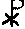
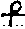

|
In the Greek N.T. two words are used for "the cross", on which the Lord was put to death.
As this latter word xulon is used for the former stauros, it shows us that the meaning of each is exactly the same. The verb stauros means to drive stakes (*1). Our English word "cross" is the translation of the Latin crux; but the Greek stauros no more means a crux than the word "stick" means a "crutch". Homer uses the word stauros of an ordinary pole or stake, or a single piece of timber (*2). And this is the meaning and usage of the word throughout the Greek classics (*3). It never means two pieces of timber placed across one another at any angle, but always of one piece alone. Hence the use of the word xulon (No. 2, above) in connection with the manner of our Lord's death, and rendered "tree" in Acts 5:30; 10:39; 13:29. Gal. 3:13. 1Pet. 2:24. This is preserved in our old Eng. name rood, or rod. See the Encycl. Brit., 11th (Camb.) ed., vol. 7, p. 505 d. There is nothing in the Greek of the N.T. even to imply two pieces of timber. The letter chi, C, the initial of the word Christ (Xristos), was originally used for His Name; or Xr. This was superseded by the symbols  and , and even the first of these had four equal arms. These crosses were used as symbols of the Babylonian sun-god, Å, and are first seen on a coin of Julius Caesar, 100-44 B.C., and then on a coin struck by Caesar's heir (Augustus), 20 B.C. (*4).On the coins of Constantine the most frequent symbol is ; but the same symbol is used without the surrounding circle, and with the four equal arms vertical and horizontal; and this was the symbol specially venerated as the "Solar Wheel". It should be stated that Constantine was a sun-god worshipper, and would not enter the "Church" till some quarter of a century after the legend of his having seen such a cross in the heavens (EUSEBIUS, Vit. Const. I. 37). The evidence is the same as to the pre-Christian (phallic) symbol in Asia, Africa, and Egypt, whether we consult Nineveh by Sir A. H. Layard (ii. 213), or Manners and Customs of the Ancient Egyptians, by Sir J. Gardner Wilkinson, iii. pp. 24, 26, 43, 44, 46, 52, 82, 136. Dr Schliemann gives the same evidence in his Ilios (1880), recording his discoveries on the site of prehistoric Troy. See pp. 337 ,350, 353, 521, 523. Dr Max Ohnefalsch-Richter gives the same evidence from Cyprus; and these are "the oldest extant Phoenician inscriptions"; see his Kypos, the Bible, and Homer: Oriental Civilization, Art, and Religion in Ancient Times, Plates XIX, XXV, XXVI, XXX, XXXI, XXXII, XL, LVIII, LXIX, &c. The Catacombs in Rome bear the same testimony: "Christ" is never represented there as "hanging on a cross", and the cross itself is only portrayed in a veiled and hesitating manner. In the Egyptian churches the cross was a pagan symbol of life, borrowed by the Christians, and interpreted in the pagan manner. See the Encycl. Brit. 11th (Camb.) ed., vol. 14, p. 273. In his Letters from Rome Dean Burgon says: "I question whether a cross oc 6b4 curs on any Christian monument of the first four centuries". In Mrs. Jameson's famous History of our Lord as Exemplified in Works of Art, she says (vol. ii. p. 315): "It must be owned that ancient objects of art, as far as hitherto known, afford no corroboration of the use of the cross in the simple transverse form familiar to us, at any period preceding, or even closely succeeding, the time of Chrysostom"; and Chrysostom wrote half a century after Constantine! "The Invention of the Cross" by Helena the mother of Constantine (in
326), though it means her finding of the cross, may or may not be
true; but the "invention" of it in pre-Christian times, and the "invention"
of its use in later times, are truths of which we need to be reminded in
the present day. The evidence is thus complete, that the Lord was
put to death upon an upright stake, and not on two pieces of timber placed
at any angle.
(*1) There are two compounds of it used: sustauroo = to put any one thus to death with another (Matt. 27:44. Mark 15:32. John 19:32. Rom. 6:6. Gal. 2:20); and anastauroo = to raise up and fix upon the stake again (Heb. 6:6). Another word used is equally significant: porspegnumi = to fix or fasten anything (Acts 2:23). (*2) Iliad xxiv. 453. Odyssey xiv. 11. (*3) e.g. Thucydides iv. 90. Xenophon, Anabasis v. 2. 21. (*4) Other coins with this symbol were struck by Augustus, also
by Hadrian and other Roman emperors. See Early Christian Numismatics,
by C. W. King, M.A.
|